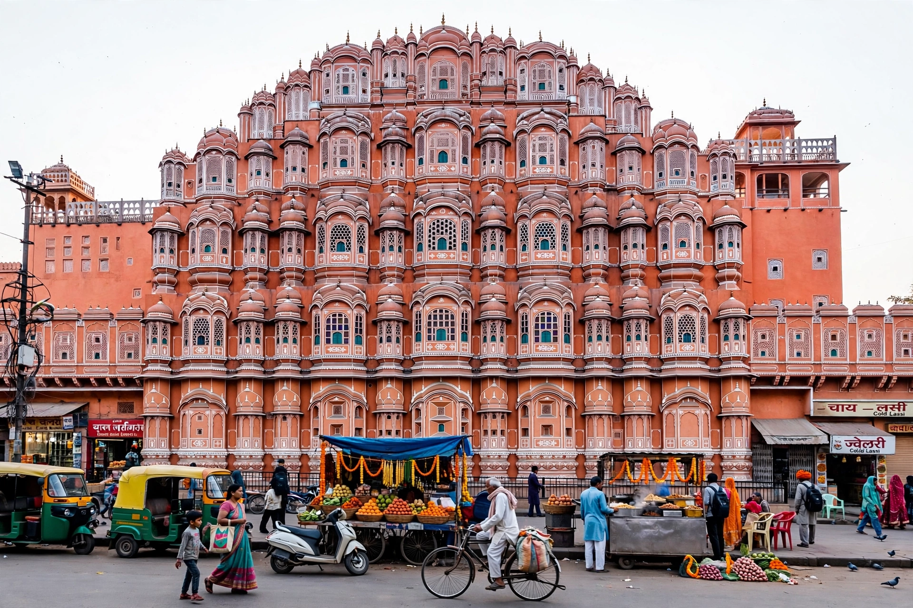

[Image placeholder: The Hawa Mahal in Jaipur]| Country | India |
|---|---|
| Capital | Jaipur |
| Area | 342,239 km² — India's largest state by area |
| Population | About 82 million |
| Name meaning | 'Land of Kings' |
**Rajasthan** is a state in northwestern India, the largest by area, bordered by Pakistan to the west and by the states of Punjab, Haryana, Uttar Pradesh, Madhya Pradesh and Gujarat. Formed in 1949–56 by merging the princely states of Rajputana, it is the land of the Rajput kingdoms, their hill forts and palaces — six of the forts are UNESCO-listed.
Much of western Rajasthan is the Thar Desert, dotted with the great caravan cities of Jaisalmer, Bikaner and Jodhpur (the 'Blue City'), while the Aravalli range — among the world's oldest fold mountains — runs diagonally to greener Mewar (Udaipur, the 'City of Lakes') in the south. Jaipur, the 'Pink City', is the capital and part of India's Golden Triangle tourist circuit with Delhi and Agra.
Rajasthan is famed for its festivals (Pushkar Camel Fair, Jaipur Literature Festival), textiles and block printing, miniature painting, puppetry and folk music, and converted palace hotels (havelis and heritage hotels). Its deserts also host India's Pokhran nuclear test site and vast solar parks at Bhadla, among the world's largest.